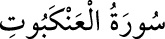

<a name=6233></a><br/>
<b>29-el-ANKEBÛT SÛRESİ</b><br/>
<i><b>Mekke’de nâzil olan bu sûre 69 (altmışdokuz) âyettir. “Ankebût”, örümcek</b></i><br/>
<i><b>demektir. 41. âyetinde kâfirlerin işleri örümcek ağına benzetildiği için sûre bu ismi<br/>almıştır.</b></i><br/>
